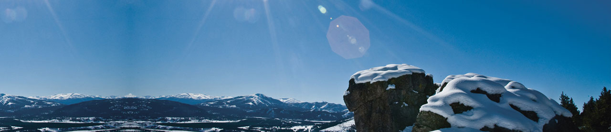
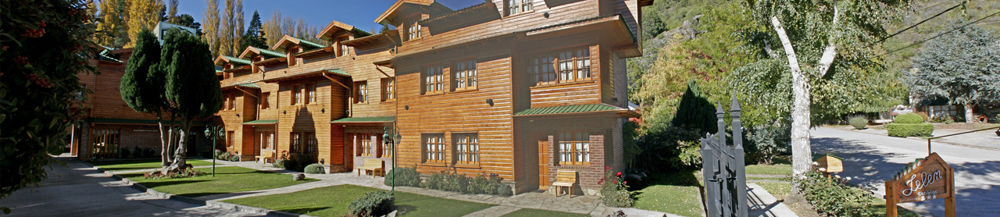

-

San Martín de los
Andes
- 
Te esperamos
aquí
- 
Cabañas
Lelen
Fotos de las cabañas
Una imagen vale más que mil palabras, Entra acá y comprobá con tus propios ojos el mejor alojamiento en San Martín de los Andes. Lo disfrutarás con amigos, con tu familia o en una escapada romantica con tu pareja...
Servicios
Si buscás una cabaña con internet, una cabaña con wi-fi, una cabaña en San Martín de los Andes, una cabaña con cochera, una cabaña con quincho o simplemente querés que lo tenga todo, ya la encontraste!.
Ubicación
La Cabaña que buscás tiene que estar bien ubicada? Cerca del centro, cerca del lago, cerca de los centros de esquí y en resumen: en el corazón de San Martín de los Andes para poder hacer las actividades sin hacer tantos kilometros. Aquí esta!!!
Cabañas Lelen en San Martín de los Andes
En Cabañas LELEN podrá disfrutar de toda la comodidad que le ofrecen nuestras cabañas, sobre la calle Coronel Diaz, a solo metros del centro de la ciudad de San Martín de los Andes... Y a escasos kilometros del Mirador Bandurrias, Reserva Natural del Centenario, Playa Catritre y Villa Quila Quina, Cerro Chapelco y el Volcán Lanín en un entorno de belleza único. Usted y su familia encontrarán en Cabañas LELEN el lugar ideal para descansar, relajarse y disfrutar de la naturaleza.
Opiniones de otros viajeros
Tripadvisor es uno de los portales turísticos más conocidos, donde 35 millones de viajeros comparten sus experiencias sobre lugares que visitar, dónde comer, alojamientos, etc.
En este portal, los viajeros también han opinado sobre nuestras cabañas. Puedes leer todas opiniones haciendo click en el banner de Tripadvisor de la derecha! Gracias Viajeros!!!
Atractivos turisticos cercanos
Lago Lacar

El Lácar es un lago de origen glaciar de la vertiente del Pacífico de Argentina, que se localiza en la provincia del Neuquén y que forma parte de la cuenca alta del chileno río Valdivia.
Cerro Chapelco

Centro de actividades invernales Cerro Chapelco a 20 kilometros de San Martín de los Andes ideal para la practica del ski y el snowboard con amigos o en familia!!!
Volcán Lanín

El volcán Lanín (3,776 m) está situado en el sud oeste de la Provincia de Neuquén (39 S, 71 O) , en cercanías de Junín de los Andes, a orillas de la ruta provincial 60 que une Argentina con Chile
Mirador Bandurrias

El mirador se constituye en un peñón de 800 mts. de altura desde la cima del cual se tiene una vista panorámica de la ciudad, de la Vega Maipú, del lago Lácar, de los cerros Cte. Díaz..
Playas Catritre y Quila Quina

Sobre el lago Lacar, a sólo pocos kilómetros del centro de la ciudad, están las playas Catritre y Villa Quila Quina. Es otra cara del lago Lacar, perteneciente al Parque Nacional Lanín.